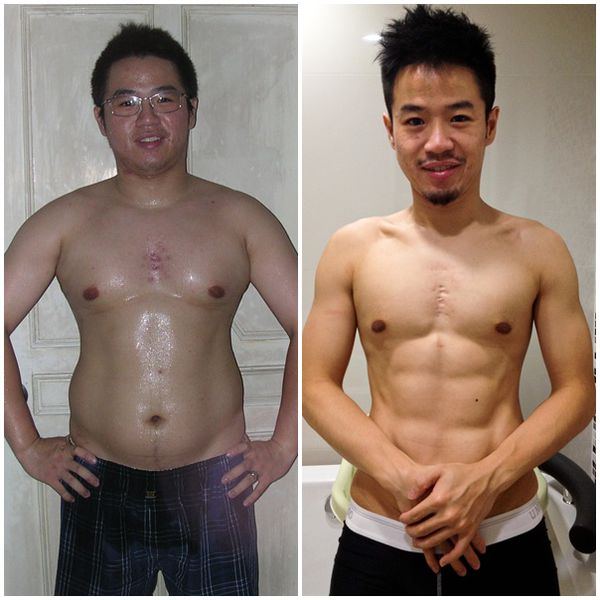
宅男的黑暗時期
「ㄟ，你看起來很痴肥耶～」
「ㄟ，你奶奶很大，走路會晃。很像果凍，很噁心耶。」
「ㄟ，你太胖了，坐後面車子會垮下去，你坐前面啦。後座太擠了擠不下你。」
不知道從什麼時候開始，肥胖、胖子、肥子，這些我人生從沒想過的字眼開始出現在我的生活裡。更沒想過，我後來居然也習慣了人家這樣叫我，而打從心底覺得自己是一個一輩子瘦不下來的胖子。
而我，也因此跟減肥這件事結下了不解之緣。
曾經的自信歲月
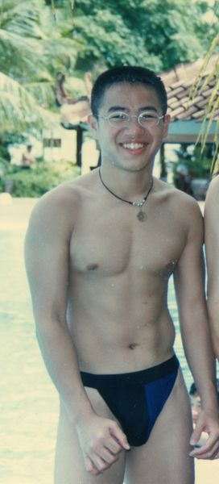
曾經小時候別人都說我長得有點可愛，所以「帥」這個字好像也很少在我人生中出現，大部分人對我的印象都是有點可愛。因為從小就有運動習慣，國小時是籃球隊的，國中時是柔道隊的，所以胖這件事好像也從來沒困擾過我。
這是國三時全家去旅遊在游泳池拍的照片，看得出我那時對身材挺有自信，居然敢穿這麼可怕的泳褲。
體重失控的開始
運動中斷期
記得好像是高中的時候腳受了一次很大的傷，有將近1、2年的時間都無法運動。運動量減少了，但食量卻沒有改變。吃東西有大碗絕不吃小碗，吃麥當勞薯條可樂一定要加大，吃到飽不吃到走不動為止覺得不划算，人家如果問要不要吃宵夜從來不會拒絕。
飲食失控期
反正就是來者不拒，大吃大喝對我來說是一種樂趣。我的體重好像是從那裡開始慢慢呈現成長的曲線，但身高卻一直維持原地不動。一開始想說才胖一點點沒關係，胖一點沒影響，然後慢慢體重就維持著逐年緩步的提升。
體重巔峰期
忽然有一天驚覺的時候，我已經胖到我人生的巔峰，體重直逼快90公斤。不高的我看起來就是個胖子無誤。現在回過頭來看，其實那時候真的滿胖的，但從小就自認長得不錯，常常被人說不知道自信從那裡來的我，在慢慢變胖的過程中好像也不覺得怎麼樣。只覺得自己就算胖也是個可愛的胖子，但是等到胖到某一個程度已經脫離可愛這個範圍的時候才驚覺來不及了。
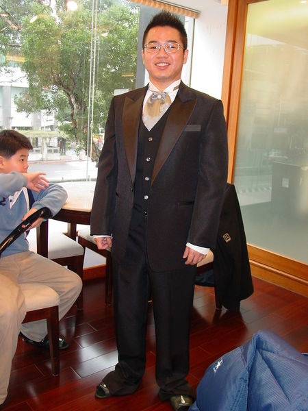
但就算如此生活還是要過，只好常常自娛自己胖子也是可以很帥氣的。
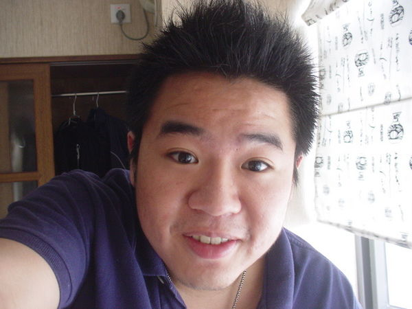 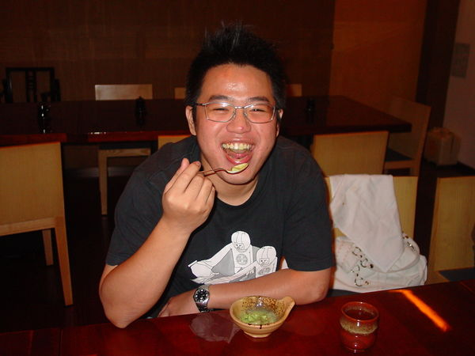
有時拍照還會做出裝可愛的表情，不過看看我肚子那三層肉真是藏不住。時不時還會很有自信來個自拍（放這些照片真的犧牲很大，我自己看了都覺得很不舒服，但為了幫助大家，豁出去了）。
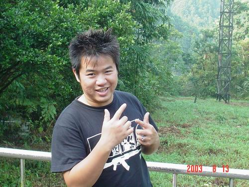 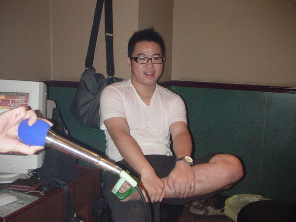
特別喜歡跟食物拍照，拍照的姿勢跟表情還挺多的。
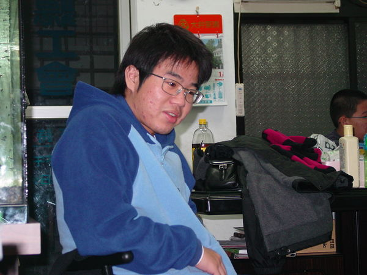 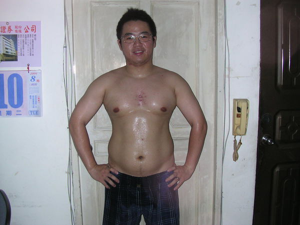
但其實那時候的胖子，表面上看起來對自己很有自信，心裡其實是很沒自信的。現在看照片從我的眼神看得出來我對自己是不開心的。事實上回想起來有段日子感覺真的是很黑暗的。
那時候的我完全失去了對自己的要求：
- 因為胖不好買衣服，所以衣服都亂穿
- 因為胖反正不帥，所以頭髮也都不整理
- 因為胖不想出門，所以每天都亂七八糟的
- 完完全全化身為一個宅男
出門真的隨便亂穿到一個程度，為什麼會穿這樣出門。自己當時為什麼會留那麼奇妙的髮型。頭髮也懶得整理（宅男正字標記無誤）。
看我也不在乎一身肥肉還敢脫衣服走在路上，根本就沒在注意形象的。
這些照片是12～3年前的我，現在看那時的我才20出頭歲而已，怎麼可以把自己搞得像一個肥胖糟老頭一樣。難怪那時身邊一堆兄弟朋友總是看不過去，常常一直用言語刺激我希望我減肥。
笑起來其實也很沒自信，常常不知道要用什麼表情拍照。
無數次失敗的減肥經歷
人的天性都是愛漂亮的，誰會不想看起來身材標準，穿衣好看，瘦瘦帥帥的呢？其實在我胖後，我也用過無數個方法減肥。
我嘗試過的錯誤減肥方法：
- 舉凡大家想得到的不吃，少吃多運動，吃藥，針灸，每天三餐吃蘋果，芭樂過日子
- 自以為熱量低又有營養，把超商有賣的能量凍飲當成正餐在吃
- 激烈的斷食，1～2個禮拜每天都只吃一餐減肥
- 還去自費看了減肥診所一次花好幾千拿了一堆莫名其妙的減肥藥在吃
不吃澱粉，油炸，吃東西要過油等等那些基礎的招式當然更不用說了，但這種方式一來很難執行，二來根本也不是正確的減重方式，只會讓你越減越肥。反覆的錯誤減肥，最後會到一種大家說的連喝水吃空氣都會肥的境界。
雖然上述那些方式看起來好像可以在短時間獲得一些成效，也都確實在當下有瘦幾公斤下來。
當時我常常白天嚷嚷著我在減肥中，不要找我聚餐，不可以吃東西。但卻在夜深人靜後，深夜12點時，趁著大家都睡了偷偷跑去市場吃控肉飯，還要加點一份鹹酥雞跟珍奶當配菜吃，彷彿為了回饋白天的挨餓，非得吃到要吐了才會心甘情願。
在大吃大喝，酒足飯飽後又非常後悔幹嘛要吃那麼多，很想把剛才吃的全部吐出來。就這樣跟發下豪語告訴別人我要減肥，然後又失敗，這樣子循環一直不斷重複著。現在回想起來那段時間生理跟心理上都承受著巨大的折磨跟痛苦。
不騙你們，我當時真是神豬一隻無誤，為了幫自己的減重做紀錄，我當時拍了很多減重前的照片。現在真的很慶幸當時有拍這些照片，要減重的朋友們，鼓勵你們一定要拍照告訴自己不會再胖回去了。
當時就是在家裡狂做運動，流得全身汗後自以為說應該有瘦一點了，就趕快拍個照片做個紀錄，可以看到左邊的日曆是2004年。
自我放棄的時期
就這樣想當然爾我從來沒有一次是真的減肥成功過，好不容易瘦下來的一點體重總是會在短時間又還回去。而不當的減肥方式也總是讓我在每一次的復胖時變得比上次更胖。越吃越胖，越減越肥這句話完全就是印證在當時的我身上。
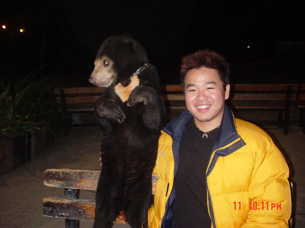
胖得連動物都不願意跟我拍照，硬要把頭轉一邊。也讓才20幾歲的我變得像個大叔一樣。
而後來的自己也似乎習慣自己是個胖子了，因為反覆的失敗，徒勞無功的減肥太多次到後來也不想減肥了。反正我就是個胖子了，每天的大吃大喝就是我宣洩壓力的方式，那時自己一個人的餐費一個月都要吃掉上萬元。而像我一開始講的，我也就這麼慢慢覺得自己應該一輩子就是這個樣子了。就是個胖子了。
轉捩點：天使的出現
直到有一天一個天使走進我的生命中，讓我深深燃燒起認真為她減肥一回的動力，那是一種一定要成功的決心，一種不成功便成仁的心態。
我一定要瘦，不論花多久時間我一定要成功瘦下來。
愛情的力量
在一個朋友的聚會認識了她，就有一種一見鍾情的感覺，但當時我太胖了，我自己都對自己的外表沒自信，我又怎麼可能追得到她。
當時故意用半開玩笑的心態跟對方說，如果我可以瘦20公斤，要她陪我約會一天，請我吃一頓飯，當做鼓勵。後來對方說她覺得反正不可能，隨便答應鼓勵一下我也無妨，殊不知她就這樣也走進我的生命中了。而我自己心裡則是想把這一個目標當成一個動力，瘦下來後一定要勇敢去追求她。
正確的減重觀念
我開始瘋狂的開始看書，上網，搜集減肥的知識，參考別人減肥成功的經驗。
我學到的正確減重觀念：
- 開始了解到原來除了運動外，飲食控制也是很重要，正確的飲食才能達到最好的效果
- 開始發現原來以前那些方式全部都是錯誤的，不吃或少吃長期下來只會減掉最重要的肌肉
- 難怪我以前根本不會瘦還越減越肥
- 認識了基礎代謝率的觀念，也開始了解到原來飲食跟運動的均衡是減重這條路上最重要的關鍵
- 持之以恆的耐心更是成功之鑰
我的減重成果
就這樣花了將近1年的時間，我成功的從人生最胖的86公斤瘦了快25公斤
慢慢從一個痴肥中年宅男變成一個清新少年。
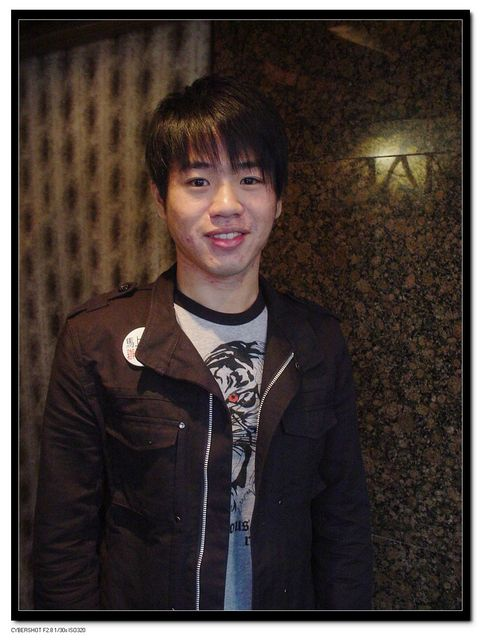
減重過程的辛苦
其實真的要講，減重的過程是很辛苦的，那種辛苦不是因為你要控制飲食跟開始運動而已，更多是一種心理上的。
當別人半夜在吃宵夜，吃著鹹酥雞配上冰啤酒或飲料時，你要告訴自己不可以吃。減肥的初期最重要，只要改掉過去的壞習慣，習慣是可以培養的，當你習慣不吃宵夜後，久了不吃宵夜就變成一種習慣了。
我培養的健康習慣：
- 肚子餓時要學會如何不挨餓的慎選健康的食物
- 以前常常去吃吃到飽的習慣也都變成吃單點的，如果有去吃也要學習控制食量吃到覺得有飽不餓就可以了
- 因為以前常常大吃大喝，胃的容量也是需要重新適應的
- 每天保持運動也成為了一種習慣
一開始我也跟大家一樣，才跑個1、2公里，就上氣不接下氣，氣喘呼呼，覺得心臟跟全身都要爆炸了。就這樣慢慢循序漸進，1公里、3公里、到5公里、10公里，把運動培養成一種習慣。
以前都靠吃來釋放壓力，後來開始運動後居然發現運動可以很大的幫助釋放壓力，也不用再靠大吃大喝來宣洩。
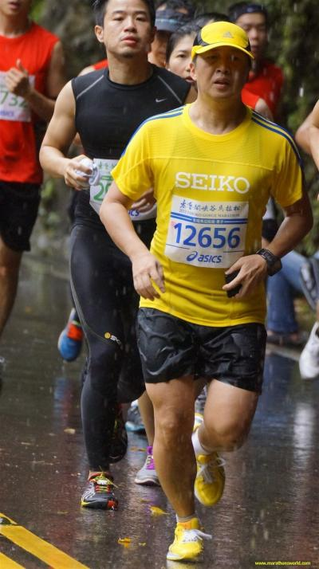
後來還跟朋友一起參加了馬拉松路跑，這在我是胖子時，都是以前從沒想過的事。
肌力訓練的重要
我也開始不停上網學習，學習到肌肉對於維持身材的重要性，了解到原來不吃反而會消耗身體珍貴的肌肉。開始認識到肌肉不會變成脂肪，脂肪也不會變成肌肉，不要再在那裡自欺欺人說我只是壯不是胖，事實上我以前那個樣子就是胖。
開始學習在家做肌力運動，伏地挺身、舉啞鈴、深蹲，這些以前沒學過的運動知識開始慢慢學習。每次都強迫自己一定要堅持才會有成果，那一大塊圓圓的肚子也終於給我練出六塊肌。現在只要有做肌力那天做個3、5百個仰臥起坐都是固定的功課。
外在與內在的改變
變瘦後我開始變得勇於打扮，敢嘗試不同的造型。從照片裡也看得出拍照的笑容變得有自信許多。
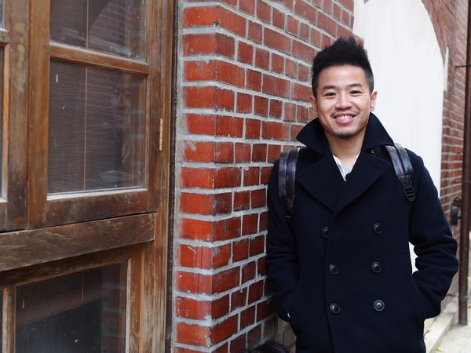 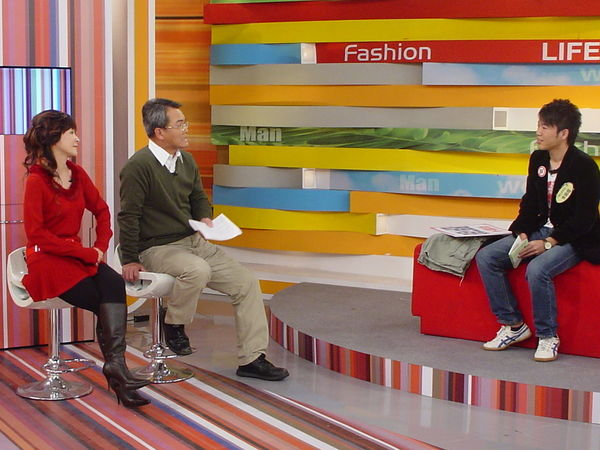
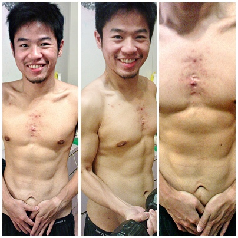 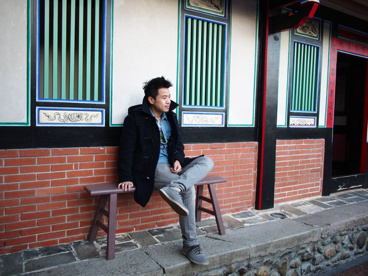
當時因為也有在網路上分享過自己的故事，還曾經被找上節目講自己減肥成功的經驗。最記得當時瘦下來後很過癮的把以前肥胖時穿的衣服全丟了，只留1、2件下來做紀念，告訴自己以後不會再胖回去了，然後一口氣買了很多S號的衣服跟30腰的褲子。
愛情的美好結果
就這樣我成功約了會，也順利的追求到我生命中最愛的女人潔西卡。
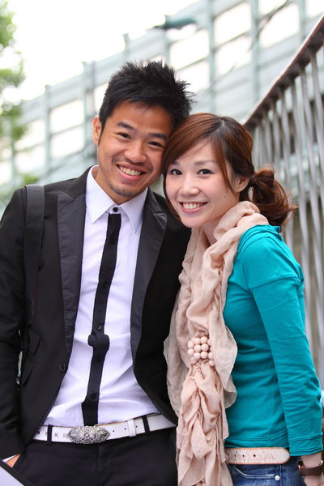
如果當時沒有她我現在大概還是一個胖子，瘦下來後其實不止是身材的改變，我覺得最重要的是我心理的改變非常大。
減重帶給我的心理改變：
- 我開始相信自己是一個能夠說到做到的人，是一個持之以恆的人
- 開始對自己有自信，說話時能夠自信的直視別人
- 能夠跟別人分享減重成功的經驗
- 這些都是我覺得瘦下來後比身材帶給我的更棒的禮物
就這樣最後我鼓起勇氣求婚了，成功的娶得美嬌娘回家。
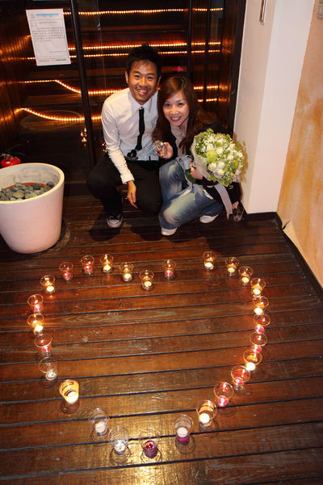 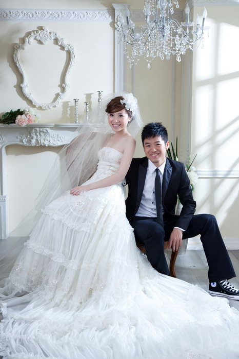
家庭生活的幸福
我們連結婚算的話在一起已經20年了。我很感謝當初老婆出現在我的生命裡，沒有她現在我的人生不知道是什麼樣子。
然後我們有了女兒，開始了一家三口的生活。為了在女兒眼中永遠保持帥氣把拔的形象，雖然在女兒剛出生時體重又一度失控。
第二次減重挑戰
寶貝女兒剛出生時，當時從老婆懷孕到跟著老婆一起坐月子，整個沒在控制。加上女兒因為個性比較膽小很容易哭，常常日夜休息都不正常，一度失控到這種程度，胖了十幾公斤。
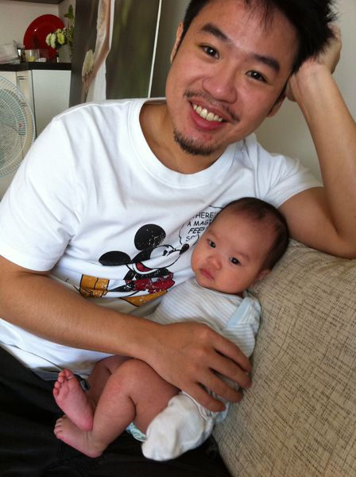 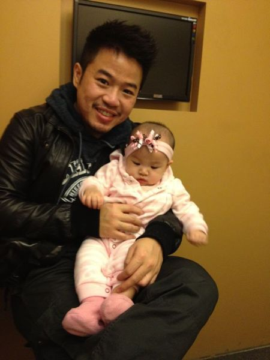
但在女兒越來越懂事後，不想女兒眼中的把拔是肥胖加氣色不好的，趕緊又開始第二次減肥計劃，成功又瘦了回來，恢復完美把拔形象。
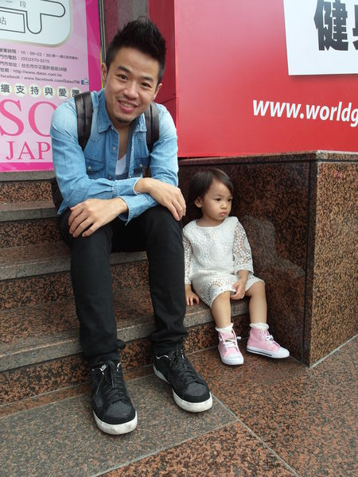
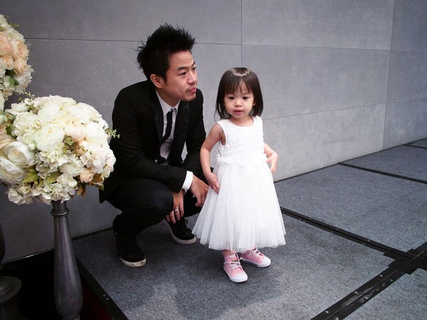
女兒是我生命中除了老婆外最珍貴的禮物。
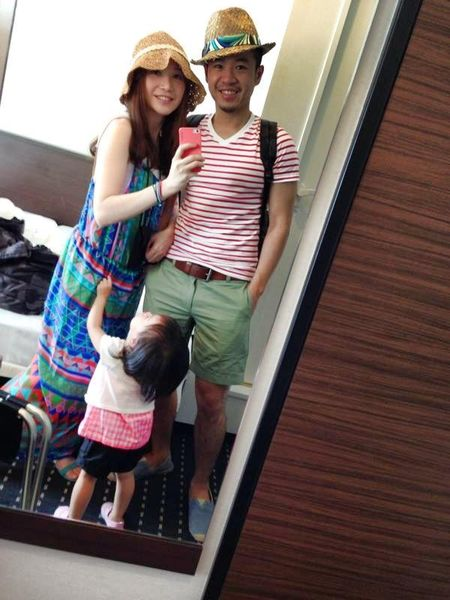 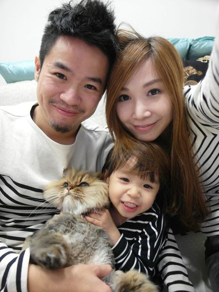
一家三口加一隻貓就是我們家全部生活的重心。
驚人的蛻變對比
現在回頭看看以前很慶幸我有減肥成功。
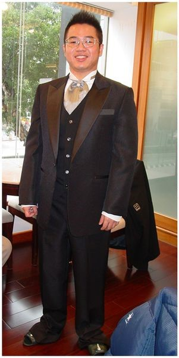

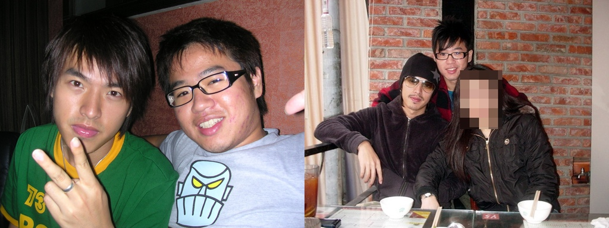 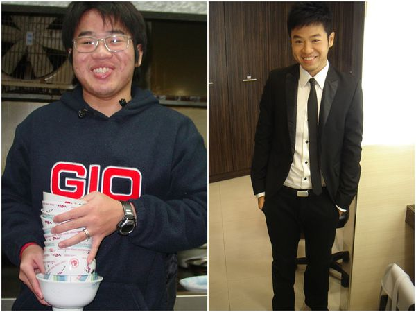

我自己都不敢相信這是同一個人，而且左邊的還是10年前的。以前跟我哥出去，他介紹說這是我弟，還有人惡毒的說不會吧，一點都不像，應該不是同一個媽生的吧！現在再也不會有人說這種話了。
左邊那樣子，我發誓不會再在我生命中再出現了。讓女兒看見老爸是帥的是我現在一直保持身材很重要的動力之一。
對錯誤減肥法的呼籲
常常在電視或網路上看到很多分享一些自認為是速成卻完全不對的減肥法，或聽到誰誰誰講說某某去看醫生吃藥瘦了十幾公斤，我的心裡就會忍不住一直大聲吶喊：「不是！不是！減肥不是這樣子減的！」
不是想要證明自己才是對的，而是怕那些真的有心想減重的人也會走跟我以前一樣的彎路。
給正在努力的朋友
如果我小小的經驗可以幫助到那怕是一個人都好，我也會覺得很開心。
希望我的分享也能激勵你，讓你們相信，只要持之以恆，終有成功的一天！